Permet la mise à disposition d’infrastructures aux
administrateurs.
Les admins n’ont plus besoin de se préoccuper des problématiques
liées à l’hébergement interne des serveurs, le matériel est mis à
disposition par le fournisseur.
Avantages
Inconvénients
Plus besoin d’aménager une salle serveur
La sécurité matérielle est assurée par le fournisseur
Pour tous les modes, l’avantage est qu’on reporte sur l’opérateur la
sécurité, la mise à niveau matérielle et logiciel, la mise à disposition
et l’entretien de l’équipement.
L’inconvénient est qu’on est parfois tributaire du fournisseur, qu’on
dépend de notre connection internet, et qu’on peut émettre des doutes
sur la confidentialité des données (où sont hébergés les serveurs ?)
IaaS (Infrastructure as a Service) est la mise à disposition par un
fournisseur d’une infrastructure complète (ex. OVH, AWS).
PaaS (Plateforme as a Service) est la mise à disposition par un
fournisseur d’une plateforme, d’un environnement de travail (ex. Apache,
Tomcat)
chatgpt
IaaS fournit une infrastructure informatique virtuelle de base, telle
que des serveurs virtuels, du stockage et des réseaux, sur lesquels les
utilisateurs peuvent déployer leurs propres systèmes d’exploitation et
applications.
PaaS fournit une plateforme de développement et de déploiement
d’applications complète, comprenant l’infrastructure sous-jacente, les
systèmes d’exploitation, les services de développement et les
outils.
En résumé, IaaS se concentre sur la fourniture d’une infrastructure
de base virtualisée, tandis que PaaS offre une plateforme complète pour
le développement et le déploiement d’applications. IaaS offre plus de
contrôle et de flexibilité, tandis que PaaS offre une abstraction plus
élevée et une plus grande simplicité pour les développeurs
d’applications.
La variable $PATH est une variable d’environnement que
l’on trouve dans les systèmes *nix (Unix, Linux). Elle contient des
chemins absolus vers des répertoires contenant des exécutables. Cela
permet d’appeler une commande dans le terminal, telle que
echo, sans taper le chemin entier vers elle. Par exemple,
si le chemin /sbin est dans la variable PATH, on peut
accéder à tous les executables contenus dans ce répertoire et appeler la
commande shutdown sans avoir à faire
/sbin/shutdown.
v2
C’est une variable d’environnement utilisée par les systèmes UNIX et
UNIX-like (y compris Linux) pour spécifier les répertoires dans lesquels
le système recherche les commande exécutable. C’est l’équivalent de la
variable d’environnement %PATH% utilisée par les systèmes
Windows.
Envoyer des messages système vers un serveur syslog. Comment
le mettre en place et comment traiter les messages ?
voir cours 05-linux-sysadmin (p.66)
Pour conserver les logs, Debian utilise rsyslog. Tous
les logs de journalctl lui sont transférés.
rsyslog travaille sur des “facilities” et des niveaux de
priorités qui déclenchent une action.
Ex. de facilities : auth, daemon, mail, user
Ex. de niveau de priorité: alert, crit, warning, info, debug
Les actions correspondent à l’écriture du journal dans un fichier
mais il est possible de configurer rsyslog pour qu’il
envoie les messages à enregistrer vers un autre serveur
rsyslog
La config est dans /etc/rsyslog.conf.
Notes: ils ne disent pas comment “envoyer des logs
vers un serveur syslog… Comprend pas non plus la 2e partie de la
question.
chatgpt
Pour envoyer des messages système vers un serveur syslog, vous avez
besoin de configurer votre système pour utiliser le protocole syslog et
spécifier l’adresse du serveur syslog. Voici les étapes générales pour
mettre en place ce processus :
Choisissez un serveur syslog : Tout d’abord,
vous devez avoir un serveur syslog prêt à recevoir les messages système.
Vous pouvez installer un serveur syslog open-source tel que rsyslog,
syslog-ng ou utiliser un service cloud de syslog.
Configuration du client : Sur la machine à
partir de laquelle vous souhaitez envoyer les messages système, vous
devez configurer le démon syslog pour rediriger les journaux vers le
serveur syslog. Le processus de configuration peut varier en fonction du
système d’exploitation que vous utilisez.
Sur Linux (rsyslog) : Ouvrez le fichier de configuration
/etc/rsyslog.conf (ou /etc/rsyslog.d/50-default.conf) et ajoutez une
ligne pour rediriger les journaux vers le serveur syslog. Par exemple,
*.* @adresse_serveur_syslog:port.
Redémarrez le service syslog : Après avoir modifié la
configuration, redémarrez le service syslog pour appliquer les
modifications. Par exemple, sur Linux, vous pouvez utiliser la commande
sudo service rsyslog restart ou sudo systemctl restart rsyslog.
Utilisé pour permettre à un utilisateur itinérant de se connecter
aux services de l’entreprise en toute sécurité.
Dans le cadre de connection sur des hotspots (wifi public), c’est la
bonne pratique pour éviter que les communications soient interceptées
par un tiers.
Une fois la connection VPN établie, l’ordinateur se retrouve
directement connecté au réseau interne de l’entreprise. L’utilisateur a
accès aux../ressources.
A ce jour, il existe 3 technologies pour le VPN Nomade :
VPN PPTP : Point to Point Tunneling Protocol (by
Microsoft, port TCP 1723)
VPN SSL : mode préféré des admins, port 443
VPN L2TP/IPSEC : Layer 2 Tunneling Protocol /
Internet Protocol Security (by Cisco, ports UPD 1701 pour service, UPD
500 pour échange de clé, UPD 50 pour chiffrement)
genrsa : génération d’une clé privée avec l’algo
RSA
-des3 : oblige l’utilisation d’une phrase de passe
pour protéger l’utilisation de la clé
-out chemin/fichier-cle-privée : chemin et nom du
fichier contenant la clé privée
2048 : longueur de la clé en bits (valeur par
défaut)
Création d’un fichier de demande de signature de
certificat : pour faire une demande de certificat auprès d’une
autorité de certification (ex. Let’s Encrypt)
Remote App permet d’utiliser une application installée sur un poste
distant en utilisant un webservice. On peut y acceder grace à un
raccourci sur son propre bureau.
Remote Desktop permet d’accèder à distance à une machine distante. On
a ainsi accès à l’entiereté de son environnement, et non plus juste à
une application.
Principales technologies utilisée pour un déploiement :
WDS : déploiement de l’OS (pour postes clients)
MDT : outils à part mais aide WDS
WinPE : ?
Sysprep : pour rendre unique la machine. Régénère le SSID
WDS (Windows Deployment
Services)
Service de déploiement Windows. C’est un “rôle” facultatif disponible
sur toutes les versions Windows Server depuis 2003R2.
2 fonctions majeures :
Le déploiement des images WIM pour les OS Windows
la fourniture d’images de démarrage (via PXE) pour l’initialisation
des processus d’installation ou de réparation
Le premier intérêt de WDS est d’offrir une “dématérialisation” des
DVD de distribution afin de les centraliser sur un serveur et fournir
par la même occasion un système d’amorçage via le réseau PXE.
MDT (Microsoft Deployment
Toolkit)
Outil d’automatisation de la fabrication et de l’installation des
systèmes Windows.
Disponible en téléchargement gratuit, requiert un kit complémentaire
nommé Windows ADK (Assessment and Deploiment Kit)
Le MDT est une console graphique (de type MMC) dont
l’objectif est de fédérer des sources, réaliser l’assemblage et proposer
des séquences de tâches pour piloter le tout.
Notes:
Si on utilise MDT sans le produit commercial SCCM (System Center
Configuration Manager), les scénarios proposés par MDT seront de type
“LiteTouch” ou “LTI” en abrégé. C’est à dire qu’en l’absence de
mécanisme tiers, il restera toujous une intervention humaine, aussi
infime soit-elle pour les déploiements, d’où le nom “LiteTouch” (“légère
intervention”).
Si on utilise MDT en couple avec SCCM, il est possible de fédérer
entièrement les processus de déploiement, jusqu’à la planification du
déclenchement. Microsoft appelle ça le “ZeroTouch”.
WinPE
C’est le remplaçant de l’ancestral disquette DOS. Il s’agit d’un
noyau système minimaliste présent pratiquement partout depuis Vista. On
peut le trouver dans des DVD d’installation, dans le MDT sous la forme
d’un client LiteTouch, au sein des images de démarrage
WDS, sans oublier sa déclinaison “WinRE” pour les procédures de
réparation.
Notes
Cette illustration montre la complémentarité des différents
composants utilisés dans une solution de déploiement Windows.
Il n’y a pas forcément besoin de dédier un serveur pour MDT.
Le partage “DeploymentShare$” du MDT mentionné n’est pas
nécessairement stocké sur un serveur de fichier Windows (un NAS peut
faire l’affaire).
On ne peut pas utiliser WinPE comme un live-cd
Sysprep
Utiliser impérativement sysprep avant une capture.
Parmi les actions de sysprep, les plus importantes sont :
nettoie les traces d’utilisation
supprime les pilotes tiers de périphérique
supprime la clé de licence et réarme le processus d’activation
régénère l’identifiant unique de sécurité local (SID) de
l’ordinateur
passe le système en condition de “re-personnalisation” (OOBE = Out
Of the Box Experience)
Depuis Vista, son chemin d’accès est le suivant :
%SystemRoot%\System32\sysprep\sysprep.exe
Master = machines de références
Tous les master déstiné à être dupliqués doivent impérativement subir
une préparation préalable, via l’outil intégré SYSPREP. Ce programme
réalise un certain nombre de dépersonnalisation et remet la machine en
condition de réinitialisation.
Bien que cela ne soit pas imposé par l’outil lui-même, pour fabriquer
un système de référence, il est fortement conseillé que la machine ne
soit pas membre d’un domaine.
Si vous réalisez une machine de référence, prenez l’habitude de
réactiver le compte administrateur intégré et éviter l’usage des autres
comptes tels que celui de l’installation.
Les images WIM
Les processus de
fabrication et de déploiement
Le processus de fabrication et de déploiement se résume comme suit
:
Préparation du PC de référence et génération de l’image WIM
Installation
Partitionnement des disques
Configuration de l’amorçage
Extraction (ou application) de l’image WIM
(THE END ?!)
Procédures déploiement WDS,
MDT
Classe : ASR
https://hackmd.io/@Corentin/H17o9AQxS
1. Profils itinérants et
redirection
1.1 Objectif
Ce document a pour but de décrire les différentes étapes de
configuration d’un profil itinérant et de la redirection de dossiers
d’un profil.
1.2 Création d’un profil
itinérant
Pour commencer, créez un dossier de partage qui héregera les profils
itinérants.
Clic droit > Propriétés > onglet Partage > Partage avancé
> cochez Partager ce dossier
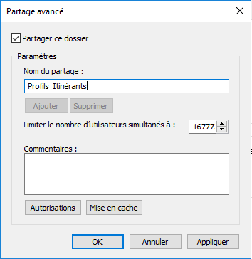
Donnez accès au groupe de sécurité dédié
Dans les propriétés du compte > onglet Profil > renseigner le
chemin vers le partage
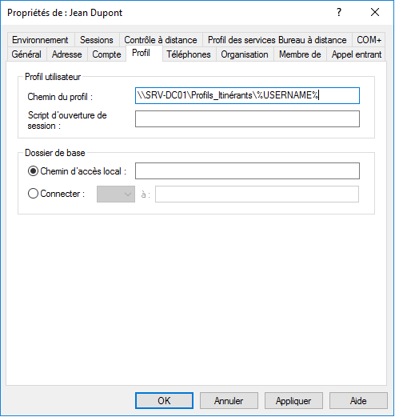
Dans le partage réseau, on retrouve le profil de l’utilisateur avec
son dossier nominatif.
Dans les propriétés des profils des utilisateurs, on constate que le
type du profils utilisateur est marqué comme étant Itinérant.
1.3 Redirection de dossier
Créez un dossier qui accueillera les redirections de profils.
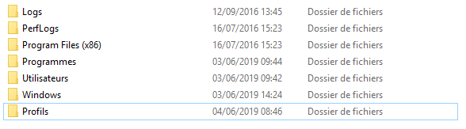
Rendez-vous dans l’onglet Partage puis cliquez sur Partage avancé et
cochez l’option Partager ce dossier.
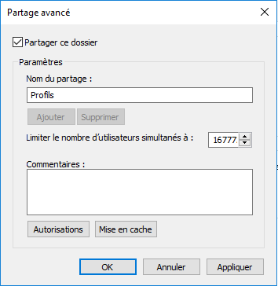
Donnez l’accès au groupe de sécurité dédié ou tous les utilisateurs du
domaine.
Créez une GPO qui accueillera la stratégie.
Se rendre dans Configuration utilisateur, Stratégie, Paramètre Windows
puis Redirection de dossiers.
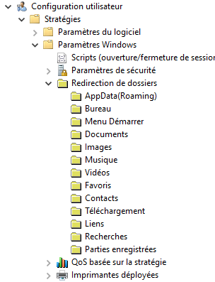
Sélectionnez un dossier puis faites un clic droit dessus et cliquez sur
Propriétés.
Sélectionnez le paramètre base pour rediriger les profils de tous les
utilisateurs.
Sélectionnez Créer un dossier pour chaque utilisateur puis renseignez
le chemin vers le partage.
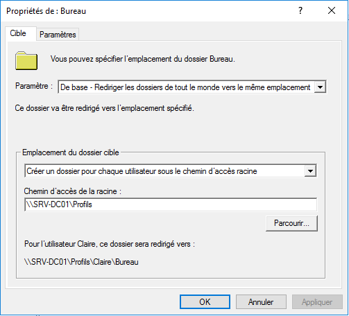
Il est possible de spécifier un groupe de sécurité dédié à la
redirection des profils en sélectionnant l’option Avancé.
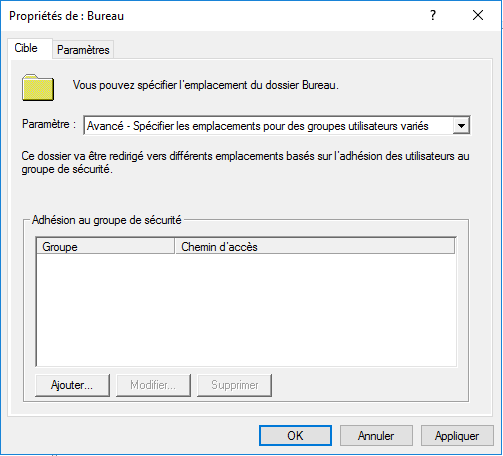
Renseignez le groupe de sécurité et le chemin vers le partage.
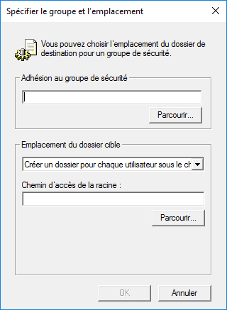
Dans la rubrique Paramètre, décochez la première option puis cliquez sur
Appliquer.
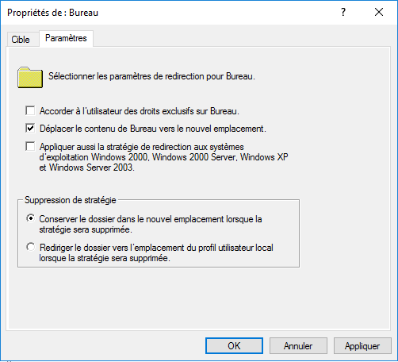
Validez le message d’avertissement.
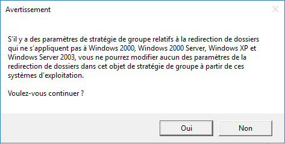
Dans le partage réseau, on retrouve le dossier nominatif de
l’utilisateur avec la redirection du bureau.
2. Déploiement d’application
MSI
3. Migration de profils
utilisateur
4. Installation et
configuration
5. Création et déploiement
d’un Master
5.1 Objectif
Ce document a pour but de décrire les différentes étapes de création
puis de déploiement d’une image master.
5.2 Préparation du poste
On considère que tous les logiciels sont installés sur le poste
Master.
Ouvrir un navigateur de fichier puis aller dans le répertoire
C:\Windows\System32\sysprep\ et executer le programme
sysprep.exe
Sélectionner le mode “OOBE” > cocher “Généraliser”
Options d’extinction > sélectionner “Arrêter le système”
5.3 Création d’une image de
capture
Sur le serveur WDS > rubrique “Images de démarrage”
Clic droit sur l’image de démarrage > selectionner “Créer une
image de capture”
Renseigner le nom de l’image, l’emplacement, et le nom du fichier
Patientez pendant la création de l’image de capture
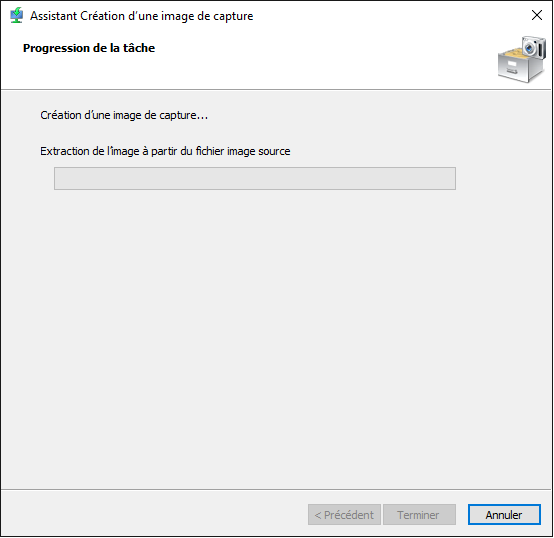
Cocher l’option “Ajouter une image au serveur de déploiement
Windows”
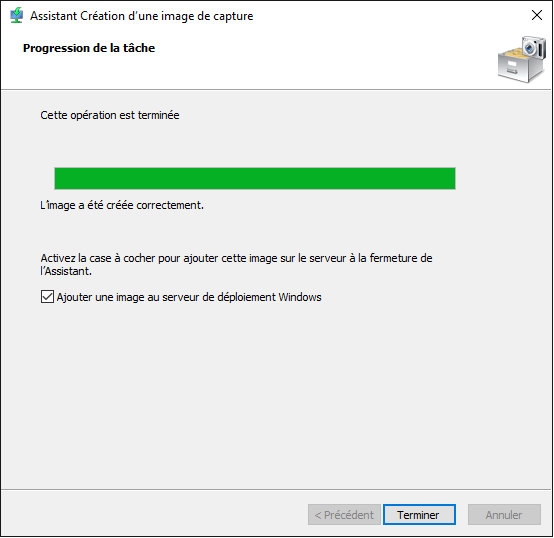
Renseigner l’emplacement du fichier
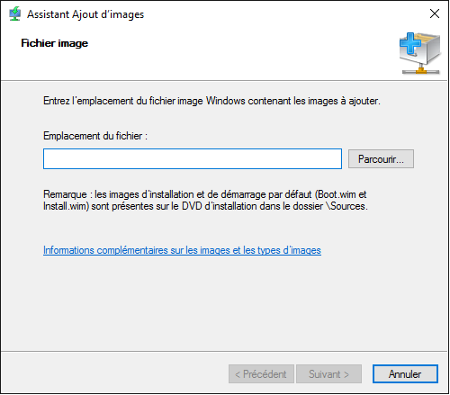
Renseignez le nom et la description de l’image.
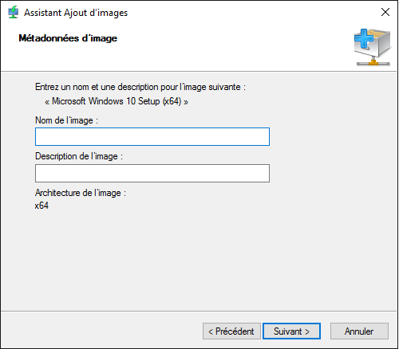
Cliquez sur Suivant.
Patientez pendant l’ajout de l’image au démarrage
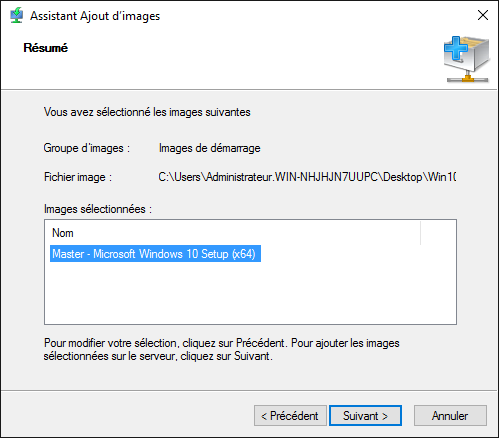
5.4 Capture de l’image Master
Sur le poste Master, démarrez sur l’image de démarrage dédiée à la
capture du Master
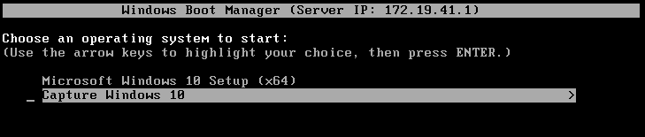
On démarre sur l’assistant de capture d’image
Selectionnez le volume et indiquer le nom de l’image de capture
Selectionner l’emplacement du fichier en local > cochez l’option
“Charger l’image sur un serveur” > Renseigner l’adresse IP du serveur
et le groupe d’images
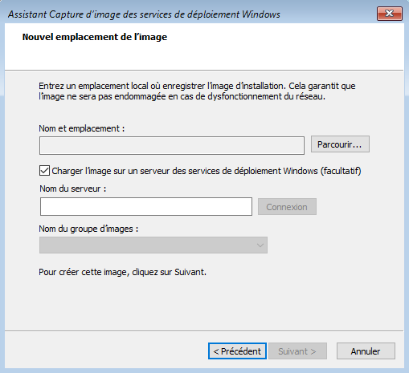
Patienter pendant la capture de l’image
Pour finir cliquer sur Terminer
L’image est automatiquement ajouté au serveur WDS
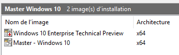
6. Image
personnalisée avec Windows ICD (comme Toolkit ?)
7. Fichier de réponse WSIM
8.
Création d’une image avec MDT Microsoft Deployment Toolkit
8.1 Objectif
8.2 Création
du dossier de partage “Deployment Shares”
8.3
Importation du système d’exploitation (“Import operating system”)
8.4
Importation du système d’exploitation (“New application”)


 Dans les propriétés des profils des utilisateurs, on constate que le
type du profils utilisateur est marqué comme étant Itinérant.
Dans les propriétés des profils des utilisateurs, on constate que le
type du profils utilisateur est marqué comme étant Itinérant.
 Créez une GPO qui accueillera la stratégie.
Créez une GPO qui accueillera la stratégie. Se rendre dans Configuration utilisateur, Stratégie, Paramètre Windows
puis Redirection de dossiers.
Se rendre dans Configuration utilisateur, Stratégie, Paramètre Windows
puis Redirection de dossiers. Sélectionnez le paramètre base pour rediriger les profils de tous les
utilisateurs.
Sélectionnez le paramètre base pour rediriger les profils de tous les
utilisateurs.